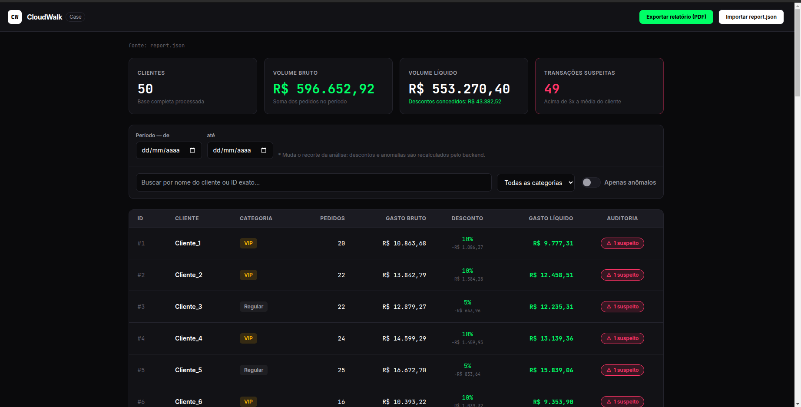
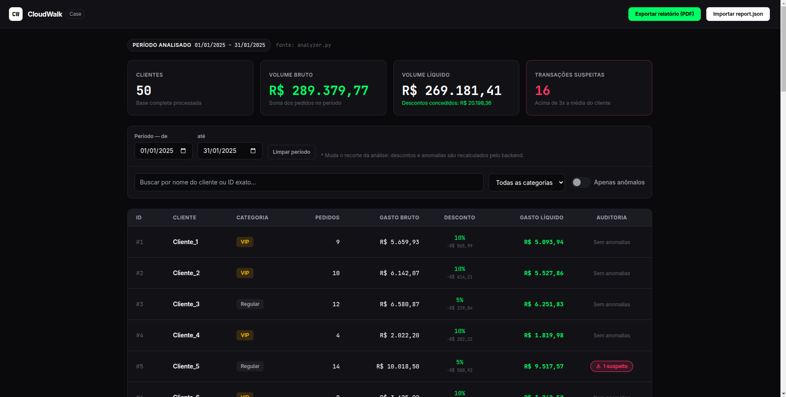
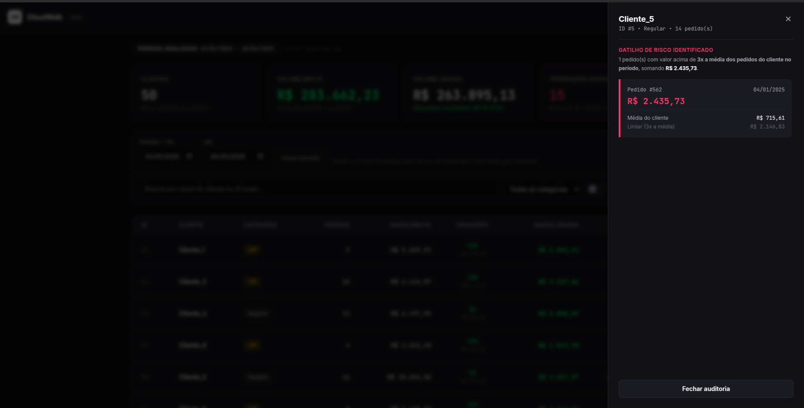
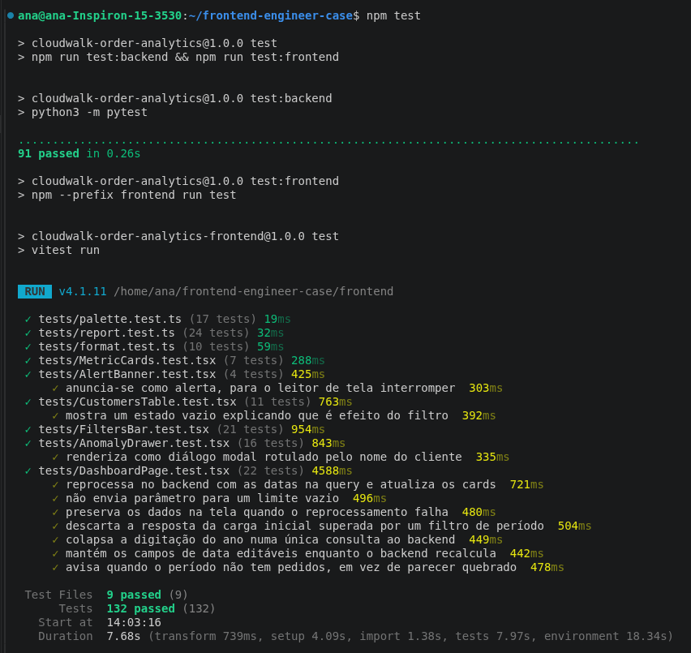
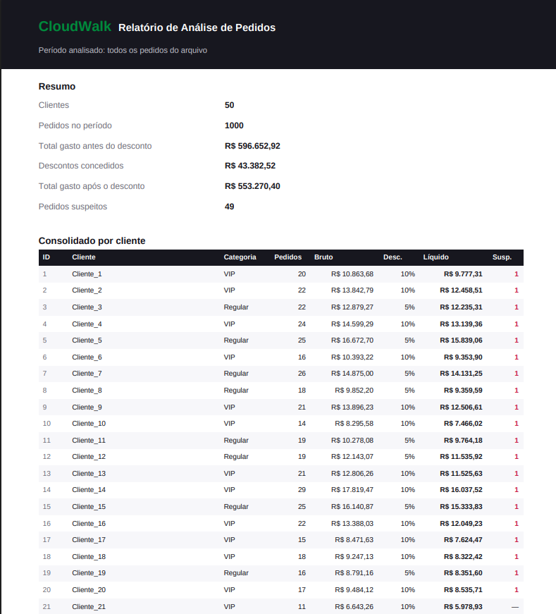

docs/img/ com os nomes
indicados nas caixas tracejadas, recarregue esta página e use Ctrl+P → Salvar como
PDF. Marque “Gráficos de fundo” nas opções de impressão. Esta faixa amarela não sai
no PDF.
Engine de regras de negócio em Python e dashboard de auditoria em Next.js
O desafio pedia um script Python que consolidasse clientes e pedidos, aplicasse regras de desconto, detectasse pedidos anômalos e gerasse um relatório, com filtro de datas pela linha de comando. Esse script é o núcleo da entrega e atende aos cinco requisitos.
Sobre ele foi construído um dashboard de auditoria, para que o resultado da análise pudesse ser lido, filtrado e conferido por alguém que não vai abrir um JSON no terminal — que é a situação real de quem precisa auditar números financeiros.
| Requisito do enunciado | Onde está | Status |
|---|---|---|
1. Consolidar clientes e pedidos por customer_id | analyzer.py · analyze() | ✓ |
| 2a. VIP com 10% de desconto | calculate_discount() | ✓ |
| 2b. Regular acima de R$ 500 com 5% | calculate_discount() | ✓ |
| 2c. Desconto só com 2+ pedidos no período | calculate_discount() | ✓ |
| 3. Pedido acima de 3x a média do cliente é suspeito | find_suspicious_orders() | ✓ |
| 4. Relatório com nome, categoria, totais e suspeitos | build_report() → JSON | ✓ |
| 5. Intervalo de datas por linha de comando | --start-date / --end-date | ✓ |
Pré-requisitos: Python 3.10+ e Node.js 18.18+. Da raiz do projeto:
npm run setup # instala o front-end e gera o report.json
npm run dev # abre o dashboard em http://localhost:3000
npm test # roda os 91 testes Python + 132 do front-endO script Python roda sozinho, sem nada do front-end e sem bibliotecas externas:
# relatório completo no terminal
python3 backend/analyzer.py
# com filtro de período (limites inclusivos) e saída em arquivo
python3 backend/analyzer.py --start-date 2025-01-01 --end-date 2025-01-31 \
--output frontend/public/report.json
Sobre o virtualenv: o analyzer.py usa apenas a biblioteca padrão
do Python. A única dependência é o pytest, e só para rodar os testes:
pip install -r backend/requirements.txt. Se houver um .venv ativado,
o pytest precisa estar instalado dentro dele.



backend/analyzer.py engine: consolidação, descontos, anomalias, CLI
backend/customers.json entrada: 50 clientes
backend/orders.csv entrada: 1000 pedidos
test_analyzer.py 91 testes das regras de negócio
frontend/app/page.tsx composição da tela
frontend/hooks/ carga de dados e filtros locais
frontend/components/ cards, filtros, tabela, gaveta, avisos
frontend/lib/ validação do contrato, formatação, exportação em PDF
frontend/app/api/report rota que reexecuta o analyzer por períodoA tela tem filtros de duas naturezas diferentes, e a distinção é a decisão de arquitetura mais importante do projeto:
| Filtro | O que faz |
|---|---|
| Período (de / até) | Reprocessa no backend. Muda quais pedidos entram na análise, então descontos e anomalias são recalculados pelo Python. |
| Busca, categoria, apenas anômalos | Recortam no navegador o resultado que já foi calculado. Não alteram nenhum número por cliente. |
Mudar o período muda o total gasto, o mínimo de 2 pedidos e a média que define as anomalias.
Recalcular isso no navegador exigiria reescrever as regras de negócio em TypeScript, criando
duas fontes de verdade para a mesma regra financeira — exatamente o que uma
auditoria não pode ter. Por isso a interface pede ao backend: uma rota executa o
analyzer.py com as datas e devolve o resultado. As regras existem em um lugar só.
Decimal, não float
Todo o cálculo monetário usa Decimal com arredondamento comercial
(ROUND_HALF_UP), e a conversão para número comum acontece só na hora de gravar o
JSON. O desconto é arredondado na origem e o líquido é obtido por subtração, de modo que
bruto − líquido seja exatamente o desconto exibido, sem divergência de centavos.
O JSON é um envelope { periodo, clientes }, onde clientes é a lista de
dicionários que o enunciado pede e periodo registra o recorte analisado. Um
relatório financeiro que não diz de que intervalo ele fala não é auditável: sem esse campo, um
relatório de janeiro fica indistinguível do relatório completo.
As datas são validadas contra o formato AAAA-MM-DD antes de qualquer coisa, e o
processo é iniciado com lista de argumentos e sem shell — nada é interpretado por um
interpretador de comandos. Tentativas como ?start=; rm -rf / são recusadas com
HTTP 400. Se o servidor não tiver Python, a página usa o report.json já gerado e
avisa que o filtro de período está indisponível, em vez de quebrar.
--anomaly-baseline exclusive.
| Suíte | Casos | O que cobre |
|---|---|---|
| pytest test_analyzer.py |
91 | As três regras de desconto, o limiar de R$ 500, o mínimo de 2 pedidos, a detecção de anomalias, o filtro de datas, a precisão monetária e a robustez de leitura dos arquivos. |
| Vitest frontend/tests/ |
132 | Validação do contrato do JSON, os componentes da tela, acessibilidade da gaveta de anomalias e a integração da página, incluindo o comportamento do filtro de período. |
Um dos testes faz o contrato entre as duas linguagens: ele lê os tipos TypeScript e compara com as chaves que o Python produz, falhando se as duas pontas divergirem em silêncio.
npm test # tudo
python3 -m pytest -k desconto # só as regras de desconto
python3 -m pytest -k suspeito # só a detecção de anomalias
npm test, mostrando as duas suítes passando.
report.json gerado em outra
máquina ou período. O conteúdo é validado campo a campo e um arquivo fora do contrato mostra
uma mensagem apontando a divergência, sem quebrar a tela.
Esc, mantém o
foco do teclado contido enquanto está aberta e o devolve ao botão de origem ao fechar. Tabela
e avisos têm marcação semântica para leitores de tela.
